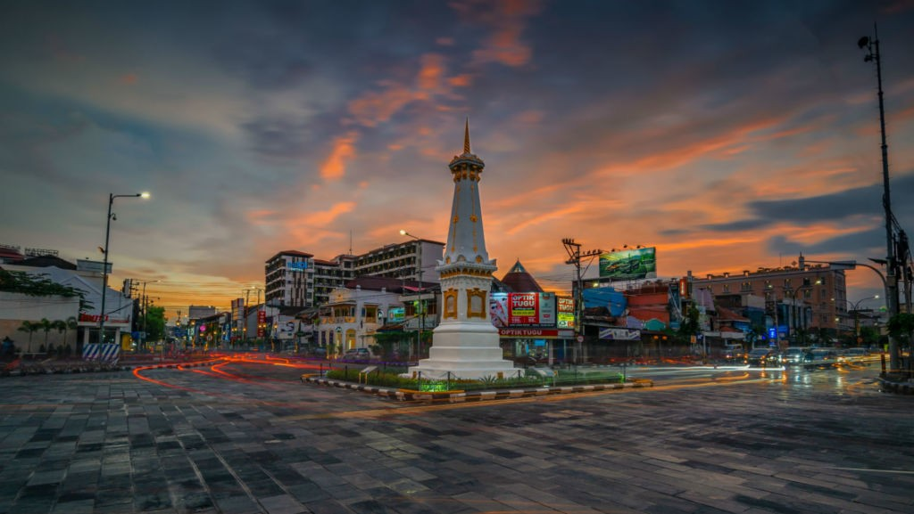
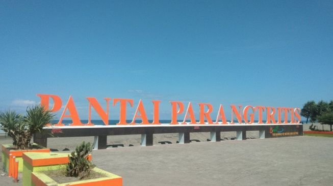

ABOUT THE YOGYAKARTA CITY
Daerah Istimewa Yogyakarta atau biasa disingkat dengan DIY adalah salah satu daerah otonom setingkat provinsi yang ada di Indonesia. Propinsi ini beribukota di Yogyakarta. Dari nama daerah ini yaitu Daerah Istimewa Yogyakarta sekaligus statusnya sebagai Daerah Istimewa. Status sebagai Daerah Istimewa berkenaan dengan runutan sejarah berdirinya propinsi ini, baik sebelum maupun sesudah Proklamasi Kemerdekaan Republik Indonesia. Menurut Babad Gianti, Yogyakarta atau Ngayogyakarta (bahasa Jawa) adalah nama yang diberikan Paku Buwono II (raja Mataram tahun 1719-1727) sebagai pengganti nama pesanggrahan Gartitawati.
Yogyakarta berarti Yogya yang kerta, Yogya yang makmur, sedangkan Ngayogyakarta Hadiningrat berarti Yogya yang makmur dan yang paling utama. Sumber lain mengatakan, nama Yogyakarta diambil dari nama (ibu) kota Sanskrit Ayodhya dalam epos Ramayana. Dalam penggunaannya sehari-hari, Yogyakarta lazim diucapkan Jogja(karta) atau Ngayogyakarta (bahasa Jawa). Sebelum Indonesia merdeka, Yogyakarta sudah mempunyai tradisi pemerintahan karena Yogyakarta adalah Kasultanan, termasuk di dalamnya terdapat juga Kadipaten Pakualaman. Daerah yang mempunyai asal-usul dengan pemerintahannya sendiri, di jaman penjajahan Hindia Belanda disebut Zelfbesturende Landschappen. Di jaman kemerdekaan disebut dengan nama Daerah Swapraja. Kasultanan Ngayogyakarta Hadiningrat berdiri sejak 1755 didirikan oleh Pangeran Mangkubumi yang kemudian bergelar Sultan Hamengku Buwono I. Kadipaten Pakualaman, berdiri sejak 1813, didirikan oleh Pangeran Notokusumo, (saudara Sultan Hamengku Buwono II ) kemudian bergelar Adipati Paku Alam I. Baik Kasultanan maupun Pakualaman, diakui oleh Pemerintah Hindia Belanda sebagai kerajaan dengan hak mengatur rumah tangga sendiri.
Sebutan kota perjuangan untuk kota ini berkenaan dengan peran Yogyakarta dalam konstelasi perjuangan bangsa Indonesia pada jaman kolonial Belanda, jaman penjajahan Jepang, maupun pada jaman perjuangan mempertahankan kemerdekaan. Yogyakarta pernah menjadi pusat kerajaan, baik Kerajaan Mataram (Islam), Kesultanan Yogyakarta maupun Kadipaten Pakualaman. Sebutan kota kebudayaan untuk kota ini berkaitan erat dengan peninggalan-peninggalan budaya bernilai tinggi semasa kerajaan-kerajaan tersebut yang sampai kini masih tetap lestari. Sebutan ini juga berkaitan dengan banyaknya pusat-pusat seni dan budaya. Sebutan kata Mataram yang banyak digunakan sekarang ini, tidak lain adalah sebuah kebanggaan atas kejayaan Kerajaan Mataram.
Predikat sebagai kota pelajar berkaitan dengan sejarah dan peran kota ini dalam dunia pendidikan di Indonesia. Di samping adanya berbagai pendidikan di setiap jenjang pendidikan tersedia di propinsi ini, di Yogyakarta terdapat banyak mahasiswa dan pelajar dari seluruh daerah di Indonesia. Tidak berlebihan bila Yogyakarta disebut sebagai miniatur Indonesia. Sebutan Yogyakarta sebagai kota pariwisata menggambarkan potensi propinsi ini dalam kacamata kepariwisataan. Yogyakarta adalah daerah tujuan wisata terbesar kedua setelah Bali. Berbagai jenis obyek wisata dikembangkan di wilayah ini, seperti wisata alam, wisata sejarah, wisata budaya, wisata pendidikan, bahkan, yang terbaru, wisata malam. Disamping predikat-predikat di atas, sejarah dan status Yogyakarta merupakan hal menarik untuk disimak. Nama daerahnya memakai sebutan DIY sekaligus statusnya sebagai Daerah Istimewa. Status Yogyakarta sebagai Daerah Istimewa berkenaan dengan runutan sejarah Yogyakarta, baik sebelum maupun sesudah Proklamasi Kemerdekaan Republik Indonesia.

Addres: Jl. Rotowijayan Blok No. 1, Panembahan, Kecamatan Kraton, Kota Yogyakarta, Daerah Istimewa Yogyakarta
Recomendation
Yogyakarta
Gowongan, Kec. Jetis, Kota Yogyakarta, Daerah Istimewa Yogyakarta 55233

Benteng Verderbug
Jalan. Margo Mulyo No.6, Ngupasan, Kec. Gondomanan, Kota Yogyakarta, Daerah Istimewa Yogyakarta 55122
Tamansari
Patehan, Kecamatan Kraton, Kota Yogyakarta, Daerah Istimewa Yogyakarta 55133

Parangtritis
Jalan. Parangtritis Km. 28 Parangtritis Yogyakarta INDONESIA 55188

Kaliurang
Hargobinangun, Kec. Pakem, Kabupaten Sleman, Daerah Istimewa Yogyakarta
Your Opinion About Yogyakarta

FYI! Yogyakarta memiliki magnet yang sangat kuat untuk membuat orang kembali.
Yogyakarta Selalu memiliki cerita disetiap sudut kota